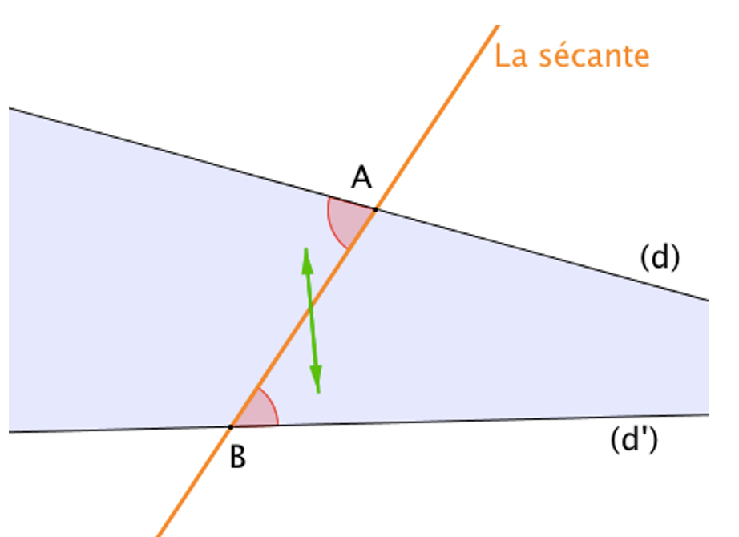
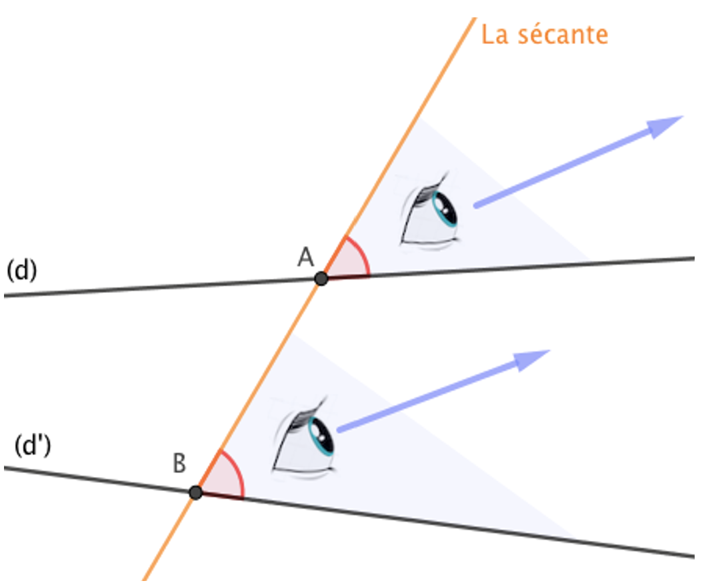
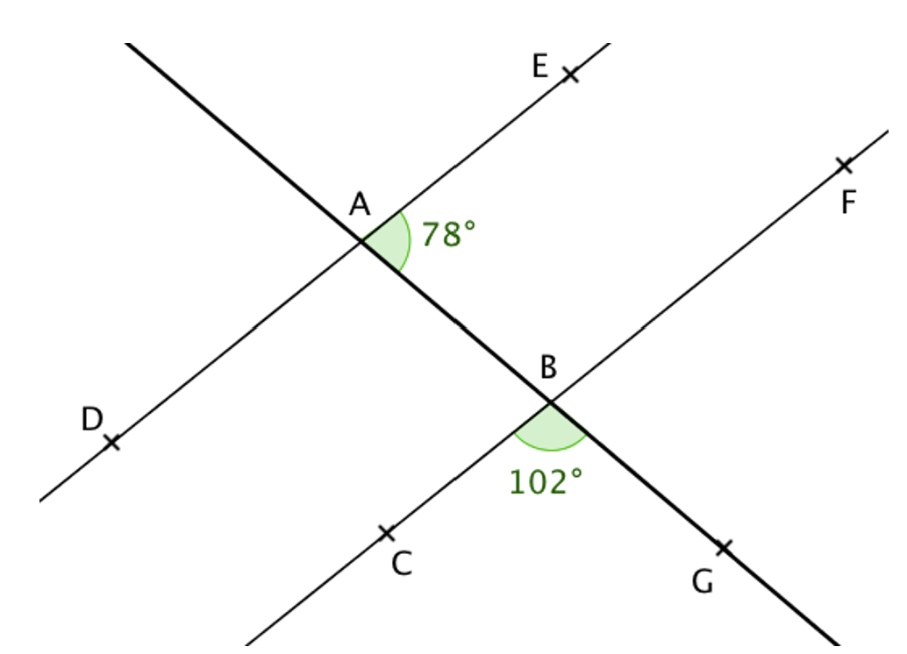
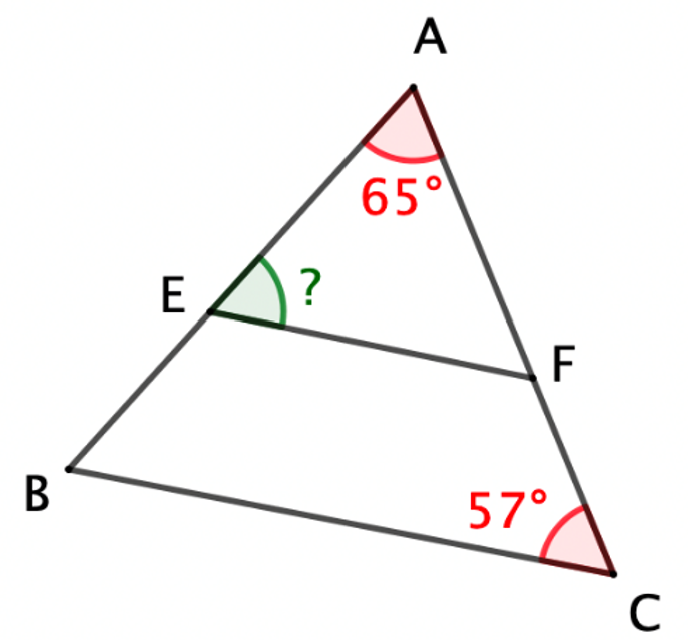

← Retour au choix des chapitres
Chapitre 4 : Angles et parallélisme
Angles opposés par le sommet
Définition :
Deux angles sont opposés par le sommet si :
• ils ont le même sommet,
• les côtés de l'un sont le prolongement des côtés de l'autre.
Propriété :
Deux angles opposés par le sommet sont toujours égaux.
Angles alternes-internes et angles correspondants
Angles alternes-internes
Définition :
On dit que deux angles sont alternes-internes, si :
• ils se trouvent à l'intérieur (interne) de la bande formée par (d) et (d'),
• ils sont de part et d'autre (alternes) de la sécante,
• ils n'ont pas le même sommet.

Ici, les deux angles rouges sont alternes-internes.
Angles correspondants
Définition :
On dit que deux angles sont correspondants, si :
• ils « regardent » dans la même direction.
• l'un se trouve à l'extérieur et l'autre à l'intérieur de la bande formée par (d) et (d'),
• ils n'ont pas le même sommet.

Ici, les deux angles rouges sont correspondants.
Remarques :
Deux droites et une sécante déterminent deux couples d'angles alternes-internes et quatre couples d'angles correspondants.
Propriétés de parallélisme
Avec les angles alternes-internes
Propriété :
Si deux droites sont parallèles alors les angles alternes-internes reposant sur ces droites sont égaux.
Propriété réciproque :
Si deux angles alternes-internes sont égaux alors les droites sur lesquelles ils reposent sont parallèles.
Avec les angles correspondants
Propriété :
Si deux droites sont parallèles alors les angles correspondants reposant sur ces droites sont égaux.
Propriété réciproque :
Si deux angles correspondants sont égaux alors les droites sur lesquelles ils reposent sont parallèles.
Exemples d'utilisation
Exemple 1
Sur la figure, les droites (ED) et (FC) sont-elles parallèles ?

Raisonnement :
GBA est un angle plat donc ABC = 180° − CBG = 180° − 102° = 78°
Je sais que : Les angles ABC et BAE sont alternes-internes et égaux.
Or, si deux angles alternes-internes sont égaux alors les droites sur lesquelles ils reposent sont parallèles. (prop 2)
Donc : (ED) et (FC) sont parallèles.
Exemple 2
Sur la figure, les segments [EF] et [BC] sont parallèles. Calculer la mesure de l'angle
AEF.

Raisonnement :
Je sais que : Les angles AFE et FCB sont des angles correspondants qui reposent sur les droites parallèles (EF) et (BC).
Or, si deux droites sont parallèles alors les angles correspondants reposant sur ces droites sont égaux. (prop 3)
Donc : AFE = FCB = 57°.
La somme des angles d'un triangle est de 180° donc dans AEF :
AEF = 180° − AFE − EAF
AEF = 180° − 65° − 57°
AEF = 58°